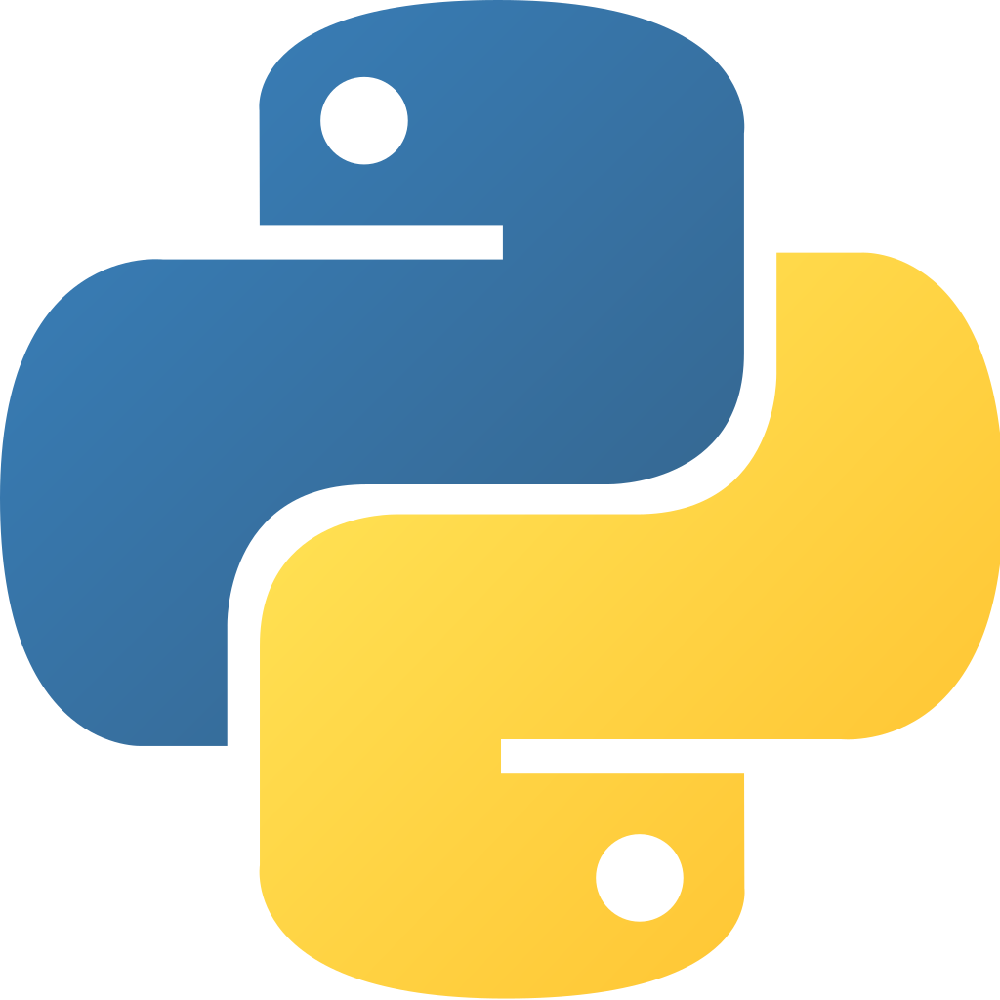

Version 1.0 March __ 2019
 Этот сайт реализует простой веб-интерфейс к учетной записи электронной почты по протоколам IMAP/SMTP. С помощью этого интерфейса любой желающий сможет отправить письмо, но из-за ограничений безопасности вы не сможете просматривать электронную почту, не определив параметры своей учетной записи на почтовом сервере. Веб-приложение PyMailCgi реализовано как набор CGI-сценариев на языке Python, выполняющихся на сервере (не на вашем локальном компьютере) и генерирующих разметку HTML при взаимодействии с броузером. Подробности смотрите на GitHub.
Эта версия не такая быстрая и полнофункциональная, как хотелось бы (например, каждый щелчок запускает выполнение операции через Интернет, здесь отсутствует операция сохранения электронной почты и не поддерживается многопоточный режим выполнения, кроме того, здесь не предусматривается кэширование заголовков или уже просмотренных сообщений). С другой стороны, PyMailCgi может взаимодействовать с любым веб-броузером и не требует устанавливать Python на ваш компьютер.
Если вы решите использовать эти сценарии для чтения своей почты, то следует учесть, что PyMailCgi не гарантирует безопасность пароля вашей учетной записи. Смотрите примечания в странице операции просмотра сообщения.